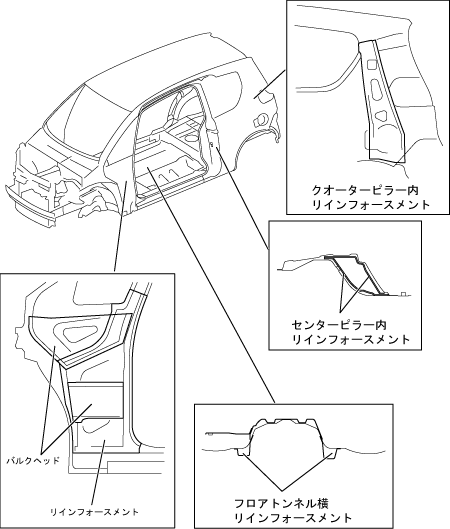

| 高剛性 |
| ● |
ボデー剛性を確保する為，影響が高い部位にリインホースメントをはじめとした部材を効果的に配置するなど，各部構造の最適化をはかりました。これにより，大開口スライドドアを採用しながらも優れたボデー剛性を確保し，衝突安全性能はもとより，操縦安定性および静粛性を高いレベルで実現しています。
|
| ● |
衝突時のフロント部変形をドア見切りまでで終わらせるため，スライドドア前方のリインフォースメント，バルクヘッドを最適配置しました。また，フロアトンネル横のリインフォースメントは，前面衝突時のフロア変形抑制に寄与します。
|
|  |